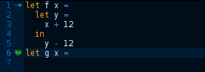
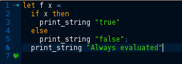
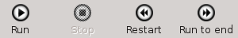
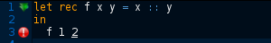
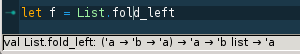

OCaml-Top
The OCaml interactive editor for education
OCaml-Top is designed for beginners and students, and specially tailored for exercises, practicals and simple projects
Features
Syntax coloring
Automatic, state-of-the-art code indentation

Makes understanding the program structure easier

Naturally avoids most beginner's syntactic mistakes
Intuitive code execution

"Run" button runs just what you would expect: the expression under cursor, and what is above if needed

Locate your errors directly in your code
Automatic type display

Put your cursor on the name of a standard library function, and the type shows up in the status bar. Non-intrusive, but here just when you need it.
Fully compatible with Microsoft Windows XP, Vista, 7 and 8, OSX and Linux.
Documentation
Installation
On Linux or OSX, we recommend you use the OPAM package manager:
First install opam and some gtk dependancies. For example, with Ubuntu:
add-apt-repository ppa:avsm/ppa apt-get update apt-get install m4 libgtksourceview2.0-dev opam
Then you need to install OCaml:
opam init default 4.01.0+ocp-bin
Finally install ocaml-top
opam install ocaml-top
On Microsoft Windows, download and run our binary installer. You will also need a working installation of OCaml itself, for which we recommend the installer by Jonathan Protzenko. You need no extra options besides OCaml itself.
Usage
The left pane is the code editor, while the right pane contains the OCaml process that will execute the code.
The in the left margin of the editor is the evaluation mark, showing that the code has been successfully executed up to that point. When pressing the button (or Ctrl e), the expression under the cursor is sent to the OCaml pane, and the answer from OCaml is displayed there. In case of an error, the relevant part of the code in the editor is highlighted.
Since programs are usually written in order, the evaluation mark always progresses from top to bottom, and everything in-between the current mark position and the expression to run will be sent to OCaml first. If you happen to need execution of an expression directly, select it before pressing .
The button runs the whole program. In case you get confused, the button restarts a fresh OCaml, rewinds the evaluation mark, and clears the right pane. And in case you got yourself in a loop, or your program just takes too long, the button can interrupt the current computation.
Keyboard shortcuts
| File management | |
|---|---|
| Ctrl n | Start with a new (blank) file |
| Ctrl o | Load a file |
| Ctrl s | Save the current file |
| Edition | |
|---|---|
| Ctrl c | Copy |
| Ctrl x | Cut |
| Ctrl v | Paste |
| Ctrl z | Undo |
| Ctrl Shift z | Redo |
| Execution | |
|---|---|
| Ctrl e | Execute the current expression |
| Escape | Stop ongoing execution |
| General | |
|---|---|
| Ctrl + | Zoom in |
| Ctrl - | Zoom out |
| F4 | Select font |
| F5 | Switch colors |
| F11 | Switch fullscreen |
| Ctrl q | Quit |
Resources
| OCaml-Top on Github | Latest sources in the official GIT repository |
| Version 1.1.2 | Download for Linux, OSX and Windows |